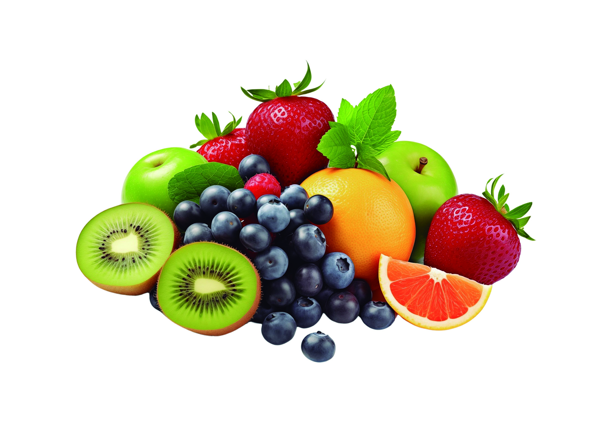

La fruta, en términos gastronómicos, es el producto comestible que se obtiene de plantas o árboles y que se caracteriza por ser, generalmente, de sabor dulce. En botánica, se le denomina fruto, es el órgano procedente de la flor o de parte de ella que contiene las semillas y contribuye a diseminarlas.